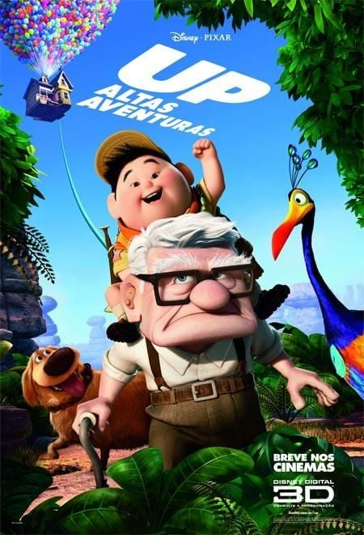

<!DOCTYPE html>
<html lang=" pt-br ">

</html>

<head>
    <link rel="stylesheet" href="css/trabalho2.css">
    <title>Up - Altas Aventuras</title>

</head>

<body>


    <div id="page-container">
        <div id="content-wrap">
         

            <div class="horz">
                
            </div>
        
        
        
        
        
        
        
        
        
        
            <hr>
        
        
        
      
                  
                
                    <div class="horz">
              
                        <h2><a href="Aventura.html">Aventura</a> | <a href="Terror.html">Terror</a> | <a href="Comedia.html">Comédia</a></h2>
                        <br><br><br><br><br><br><br><br><br><br><br><br><br><br><br><br><br><br><br><br><br><br><br><br><br><br><br><br><br><br><br><br><br><br><br><br>
                </div>
                 
           
                
             
        
                <div class="caixa3">
        
                    
        
                </div>
          
                <div class="caixa4">
                    
                    <b>Diretor: </b> Pete Docter
                    <br>
                    <br>
                    <b>Com: </b> Ed Asner - Jordan Nagai - Christopher Plummer - Bob Peterson
                    <br>
                    <br>
                    <b>Gênero: </b>  Infantil/Aventura
                    <br>
                    <br>
                    <b>Censura: </b> Livre
                    <br>
                    <br>
                    <b>Tempo de duração: </b> 1h 36min
                    <br>
                    <br>
                    <b>Sinopse: </b> Carl Fredricksen é um vendedor de balões que, aos 78 anos, está prestes a perder a casa em que sempre viveu com sua esposa, a falecida Ellie. Após um incidente, Carl é considerado uma ameaça pública e forçado a ser internado. Para evitar que isto aconteça, ele põe balões em sua casa, fazendo com que ela levante voo. Carl quer viajar para uma floresta na América do Sul, onde ele e Ellie sempre desejaram morar, mas descobre que um problema embarcou junto: Russell, um menino de 8 anos.

                </div>
        
        
        
        
        
        
        
        
            <div class="vertical-line"></div>
        
            <div class="caixa">
        
        
                <a href="Pagina_principal.html">
                    <h2>Principal</h2>
                </a>
        
                <a href="Filmes.html">
                    <h2>Filmes</h2>
                </a>
        
        
                <a href="Trailers.html">
                    <h2>Trailers</h2>
                </a>
        
                <a href="Trilha_sonora.html">
                    <h2>Trilha Sonora</h2>
                </a>
        
                <a href="Contatos.html">
                    <h2>Contato</h2>
                </a>
        
                <a href="Sobre.html">
                    <h2>Sobre</h2>
                </a>
        
        
                
        
            
            </div>


        </div>
        <footer id="footer">
            <hr>
            <div class="horz">
            <fonte-maravilhosa>©Matheus Kersul & Victor Vellasco - Instituto Federal do Sul de Minas Gerais- 2024</fonte-maravilhosa>
        </div>
        </footer>
      </div>


</body>